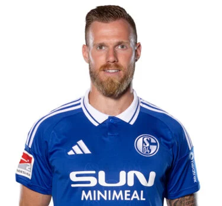
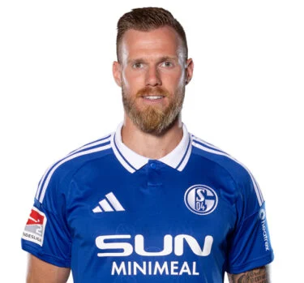
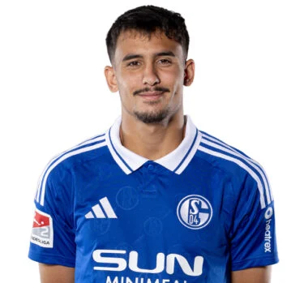
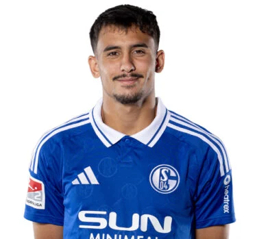

Die Herrenmannschaft des FC Schalke 04 gehört zweifellos zu den traditionsreichsten und bekanntesten Fußballvereinen in Deutschland und hat sich in den vergangenen Jahrzehnten immer wieder als eine feste Größe im deutschen und internationalen Fußball etabliert. Gegründet wurde der Verein im Jahr 1904 und hat sich seitdem zu einer der bedeutendsten Fußballmarken des Landes entwickelt.
Im Laufe seiner Geschichte hat Schalke 04 zahlreiche nationale und internationale Erfolge erzielt und eine treue Anhängerschaft rund um den Globus gewonnen. Die Königsblauen haben insgesamt 7 Deutsche Meisterschaften gewonnen und 5 DFB-Pokale in ihre Vereinsgeschichte aufgenommen.
In den frühen Jahren der Vereinsgeschichte prägte Schalke 04 den deutschen Fußball maßgeblich und war regelmäßig im internationalen Wettbewerb vertreten. Besonders in den 1930er und 1940er Jahren war die Mannschaft auf nationaler Ebene äußerst erfolgreich und konnte in dieser Zeit immer wieder die Meisterschaft gewinnen.
Die 1990er Jahre brachten eine aufregende Phase des Aufstiegs für den FC Schalke 04, besonders unter dem Trainer Huub Stevens, der die Mannschaft zu einer der stärksten Mannschaften in der Bundesliga formte. Der Höhepunkt dieser Ära war der Gewinn des UEFA-Cups im Jahr 1997, der den Verein in Europa noch bekannter machte.
Im 21. Jahrhundert erlebte Schalke sowohl triumphale Momente als auch schwere Rückschläge. Besonders hervorzuheben ist der Sieg im DFB-Pokal 2011, bei dem die Mannschaft durch beeindruckende Leistungen und große Leidenschaft ihre Fans begeisterte. In der Champions League konnte Schalke 04 immer wieder für Überraschungen sorgen, etwa 2011, als sie das Halbfinale erreichten und dabei prominente Mannschaften wie Inter Mailand und Lyon besiegten.
Die Veltins-Arena, das Heimstadion von Schalke 04, gehört heute zu den modernsten und bekanntesten Fußballarenen Europas und ist bekannt für ihre einzigartige Atmosphäre. Hier tragen die Königsblauen ihre Heimspiele aus und bieten ihren Fans in jeder Saison neue unvergessliche Momente. Die Atmosphäre in der Arena, insbesondere in den packenden Spielen gegen Erzrivalen wie Borussia Dortmund, ist elektrisierend und unübertroffen.
Auch im internationalen Wettbewerb hat Schalke immer wieder für Furore gesorgt und sich als einer der besten deutschen Vertreter in der Champions League und Europa League gezeigt. Besonders die legendären Begegnungen mit Top-Clubs wie Manchester United oder dem FC Barcelona bleiben den Anhängern des Vereins für immer in Erinnerung.
Der Verein legt großen Wert auf die Förderung von Talenten aus der eigenen Jugend und hat eine der renommiertesten Ausbildungsstätten im deutschen Fußball – die Schalker Knappenschmiede. Spieler wie Manuel Neuer, Julian Draxler und Leon Goretzka, die heute in den größten europäischen Ligen spielen, haben ihre ersten fußballerischen Schritte in Gelsenkirchen gemacht. Diese starke Nachwuchsarbeit macht Schalke 04 zu einem Verein, der nicht nur auf erfahrene Profis setzt, sondern auch regelmäßig junge Talente in die Bundesliga-Mannschaft integriert.
Neben den sportlichen Erfolgen ist der FC Schalke 04 auch für seine einzigartige Vereinsphilosophie und das enge Band zwischen Mannschaft und Fans bekannt. Die "Schalker Knappen", wie die Fans des Vereins genannt werden, sind eine der leidenschaftlichsten Anhängerschaften in Deutschland. Die Fans sind berüchtigt für ihre Unterstützung der Mannschaft, egal in welchen Zeiten – ob in guten oder schwierigen Jahren.
Heute, in der Ära des modernen Fußballs, strebt der Verein weiterhin danach, an die Erfolge der Vergangenheit anzuknüpfen und eine wichtige Rolle im deutschen und internationalen Fußball zu spielen. Schalke 04 steht nicht nur für sportliche Erfolge, sondern auch für Tradition, Zusammenhalt und Leidenschaft – Werte, die von jeder Generation von Spielern und Fans weitergetragen werden.
Der Verein ist ein Symbol für die Verbundenheit mit seiner Heimatstadt Gelsenkirchen und der Region, und jeder Spieler, der das königsblaue Trikot trägt, weiß, dass er nicht nur für sich selbst, sondern auch für die gesamte Schalker Gemeinschaft spielt.
Die Reise des FC Schalke 04 ist noch lange nicht zu Ende, und die Herrenmannschaft des Vereins wird auch in Zukunft alles daran setzen, weiterhin in der Spitze des deutschen Fußballs zu bleiben und internationale Erfolge zu erzielen. Mit einer Mischung aus erfahrenen Profis und vielversprechenden Talenten blickt der Verein optimistisch in die Zukunft und wird alles daran setzen, seine Tradition fortzuführen und neue Geschichte zu schreiben.


 



 
